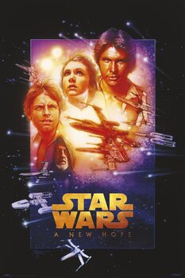

Les 3 films de la trilogie de 1977
Episode IV :Un nouvel espoir
L'intrigue du film se concentre sur l'Alliance rebelle, une organisation qui tente de détruire la station spatiale Étoile noire, l'arme absolue du très autoritaire Empire galactique. Mêlé malgré lui à ce conflit galactique, le jeune ouvrier agricole Luke Skywalker s'engage au sein des forces rebelles après le massacre de sa famille par des soldats impériaux. Initié aux pouvoirs de la Force par son mentor Obi-Wan Kenobi, trop tôt assassiné par le maléfique Darth Vader (Dark Vador en VF), Luke utilise ses nouveaux dons pour détruire l'Étoile noire à la fin du film.
Découvrez le synopsis détaillé de l'épisode IV sur Wikipedia
Episode V :L'Empire contre-attaque

L'histoire de cet épisode se déroule trois ans après les événements d’Un nouvel espoir. La guerre entre le maléfique Empire galactique et son antagoniste, l’Alliance rebelle, bat son plein. Les héros de l’Alliance Luke Skywalker et Han Solo se séparent après la prise de la principale base rebelle par l’Empire. Luke part sur la planète Dagobah afin de suivre la formation de Jedi auprès du maître Yoda. Solo tente lui d’échapper à la chasse spatiale que lui mène Dark Vador, l’apprenti de l’Empereur Palpatine.
Le film se termine par un combat entre Luke et Vador et la scène culte où vador lui révèle qu'il n'est autre que son père.
Luke, je suis ton père !
Episode VI :Le retour du Jedi

L'histoire de cet épisode se déroule un an après les événements de L'Empire contre-attaque. Le maléfique Empire galactique construit une nouvelle station spatiale Étoile de la mort pour anéantir définitivement l'Alliance rebelle, son opposition principale. Pour tendre un piège à la flotte ennemie, l'empereur Palpatine se rend sur la station encore vulnérable. Les dirigeants de l'Alliance lancent donc toutes leurs forces à l'assaut ne se doutant pas que la flotte impériale les attend de pied ferme. De son côté, le jeune Jedi Luke Skywalker, l'un des héros de l'Alliance, veut sauver son père Dark Vador du côté obscur de la Force et le rallier à sa cause.
Découvrez le synopsis détaillé de l'épisode VI sur Wikipedia